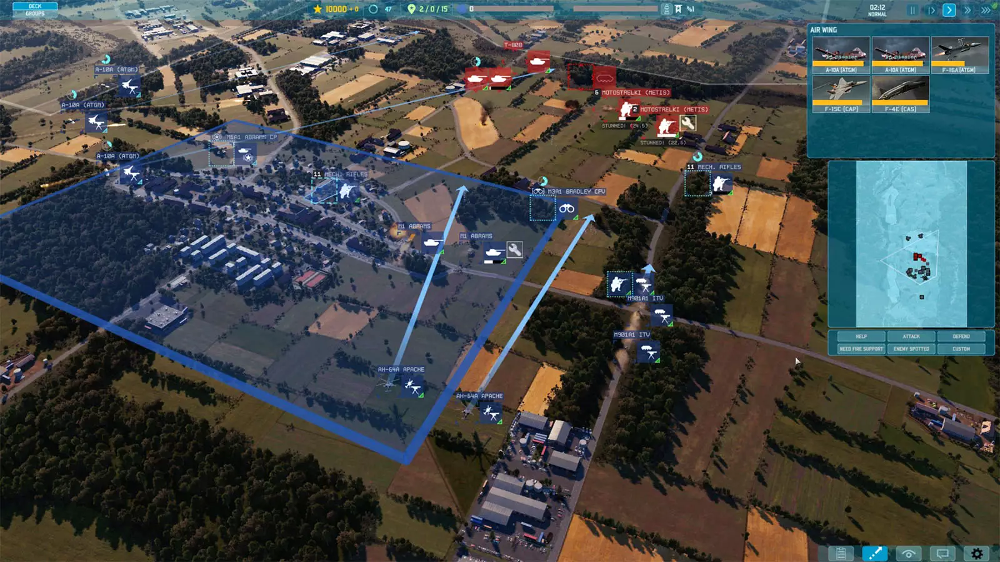

About Me
Junior
School of Computer and Communication Engineering, The
Northeastern University (Shenyang, China)
Academic Performance
GPA Ranking: around ??%
GPA: ?. ??? / 5.
Research
-
2024 Fall - Now, Point cloud segmentation (Machine learning) Teacher Lv, NEU(China)
-
2025 Spring - Now, Water leckage segmentation (Deep learning) Teacher Hu, ???(China)
Projects
-
Computer Organization: Designed and simulated
a five-stage scalar pipelined CPU based on the Harvard
architecture with integrated memory.
- ✅ Memory, and write-back hazard handling
- ✅ Data forwarding
- 🔧 Simulated instruction-level behavior
-
💯 verified pipeline correctness through test programs
-
Data Structure: Designed and implemented a C++
library that supports arbitrary-precision arithmetic, providing basic operations for large integers.
-
✅ Addition, subtraction, multiplication, and division with
digit-level control.
- ✅ Faster algorithms
- Other Projects: …
Language Proficiency
- TOEFL: 103 / 120 (24 Apr)
- CET-6: 569 / 710
- CET-4: 672 / 710
Hobbies
RTS games, such as WARNO by Eugen.
